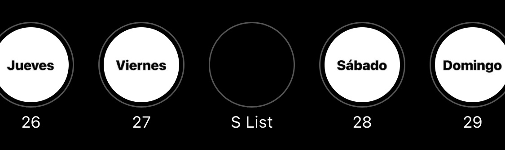

<section class="section section-lg pt-0 @@classes">
    <div class="container">
        <div class="row align-items-center justify-content-around">
            <div class="col-md-6 col-xl-4 mb-5">
                <div class="card bg-primary shadow-soft border-light shadow-inset organic-radius1 p-3">
                    
                </div>
            </div>
            <div class="col-md-6 col-xl-7 text-center text-md-left">
                <h2 class="h1 mb-4">How to make your own "S List"</h2>
                <ol>
                    <li>start by following atleast 1 DJ/event organizer/promoter</li>
                    <li>follow every relevant account they tag in their posts/stories</li>
                    <li>browse your feeds for event posts and reshare them to your story</li>
                    <li>after "you're all caught up", highlight all your your stories by date</li>
                    <li>re-highlight the most interesting events as a Special List (subjective)</li>
<br>
                    <li>optional: use your Special List to better plan your nightlife adventures</li>
                    <li>optional: share with friends and/or develop an event sharing community</li>
                    <li>optional: ask your beloved community to spread your project </li>
                    <br>
                    <li>repeat the steps above as often as you can until you don't want to</li>
                </ol>
                <ul>
                    <li>Do this for yourself (finding events) and you will never get tired.</li>
                    <li>Alternate and ice your thumbs.</li>
                    <li>Share for the sake of sharing.</li>
                </ul>
                
                
            </div>
            
        </div>
    </div>
</section>